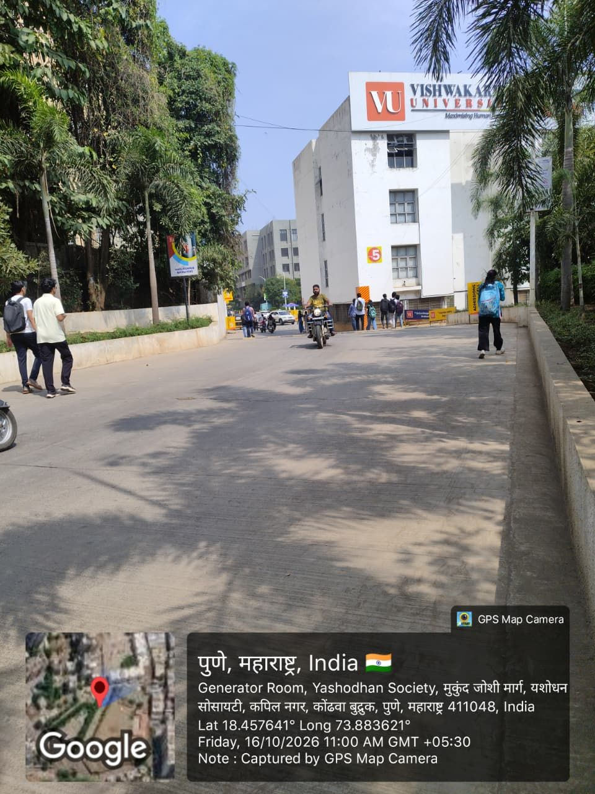

IoT integration with the University Management System
How student services at Vishwakarma University are organised digitally, and how campus events, such as a card tap or a gate entry, could become authorised records in a UMS / ERP.
What is a UMS / ERP?
A University Management System, often called an ERP, is the central software a university uses for admissions, attendance, notices, examinations, results, certificates and service requests.
At Vishwakarma University we saw the campus setting on 16 October 2026 and studied the student-facing services published on the official website. These show what the university's system has to support every day.
Questions for an authorised follow-up
- Which system maintains the student identifier?
- How is an attendance record matched to a student?
- Who may correct an incorrect event?
- How are duplicate or offline device submissions handled?
Student services at VU
From VU websiteHow a campus action could become a digital record
Harshvardhan's proposed IoT–UMS flow. This is a student design, not VU's verified internal architecture.
Student identity
A unique student ID or enrolment numberIoT event
A reader sends device ID, time and student referenceValidation
Check identity, remove duplicates, apply rulesUMS / ERP
Authorised record is saved with a timestampAdministrative use
Status updates, verification and reportsSynchronisation
A delayed device event should keep its original timestamp and never silently overwrite an earlier verified entry.
Repeated data entry
One student identity should be reused across every service, so a change of contact details is made once, not in every request.
What the visit and website showed

UMS services found
VUNET, ERP, academic calendar, circulars, results, standard forms and the Student Facilitation Centre.
Real integration example
From VU website"Application for Bonafide Certificate is now available on your ERP": a request moved from a paper form to the ERP.
Problem observed
From VU websiteOther requests (migration, transfer, character certificate, LOR, duplicate ID card, no dues) are still downloadable forms.
Improvement suggestion
Our proposalA student dashboard linking notices, forms and request status, tested with fictional records before any real integration.
We did not access the ERP or any student records. Everything on this page comes from public pages and our own campus observation. The proposed design shares only the minimum data each role needs.